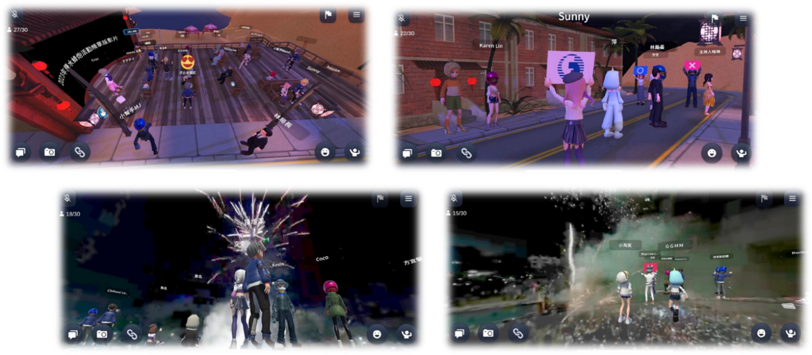

輕鬆打造你的元宇宙應用
YoCity 元宇宙平台由中華電信研究院自主研發，專注於城市行銷、文化科技與社交互動，讓開發者能輕鬆打造沉浸式體驗。平台提供開發框架，加速虛擬場景設計，支援Android、iOS、Web及meta VR，適用於線上行銷與導覽。廣泛應用於縣市政府、商圈、美術館、博物館及賽事活動，推動數位典藏與文化資產發展。
立即體驗

元宇宙應用特別獎 - 提醒與注意事項
- 參賽者使用指定中華電信 YoCity 元宇宙平台來開發作品，並符合競賽主題，即可角逐「元宇宙應用特別獎」。
- 提交作品時，需附加簡要技術說明，介紹如何運用 YoCity 元宇宙技術，並於評分期間不可再進行任何修改變更平台作品的操作。
- 如報名元宇宙應用特別獎項，於作品提案規劃書第九項自行補充增列項目說明部分可額外標註：a. YoCity元宇宙平台場景名稱與網址連結、b. SDK使用說明文件等補充項目。
- 獎項由專業評審團進行獨立評選，不影響其他競賽獎項。
- 中華電信 YoCity 元宇宙平台相關開發資源與技術資訊，請參閱「元宇宙應用特別獎」專區內之 SDK 說明文件，並持續關注公告更新。
- 「元宇宙應用特別獎」參賽作品的評分須達 一定標準 才具備獲獎資格。若所有參賽作品的最終成績均未達60分，則該獎項將從缺。
- 若發現參賽作品未符合YoCity元宇宙技術使用條件，或違反公平競爭原則，主辦單位有權取消特別獎資格。
- 參賽者使用本公司提供之元宇宙技術、素材及相關資源進行創作時，應遵守適用之智慧財產權法規。
- 參賽作品的原創內容，其著作權歸屬參賽者所有；但參賽者不得主張對本公司提供之技術與素材擁有任何權利。本公司保留審查與管理參賽者使用該等資源之權利，並有權要求調整或移除違反相關規定的內容。
加入我們！成為元宇宙平台的應用創作者吧！
中華電信提供的 - 元宇宙平台 SDK（Software Development Kit）是一款 Unity 開發套件，允許創作者使用 Unity 3D 引擎創建元宇宙應用場景，並將其發佈至中華電信經營的 YoCity 元宇宙平台。
前往 SDK 說明文件
說明文件包含：
- SDK 下載連結
- 創作流程與 SDK 介面說明
- 技術支援與諮詢
準備好探索元宇宙的無限可能了嗎？現在就加入我們，一起打造未來！